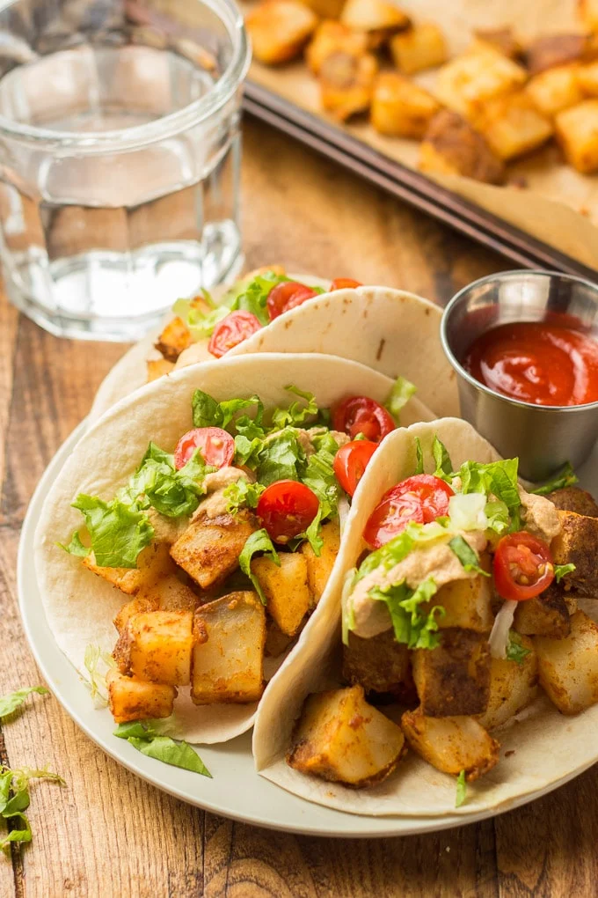

Spicy Potato Tacos

Description
These scrumptious potato tacos are stuffed with crispy oven-roasted potatoes smothered in creamy chipotle sauce and piled with your favorite taco toppings! A delicious comforting vegan meal that's perfect for your next taco Tuesday.
Ingredients
- Potatos
- Oil
- Cornstarch
- Spices
- Salt & pepper
- Raw cashews
- Water
- Adobo sauce
- Red wine vinegar
- Flour tortillas
- Shredded lettuce
- Any other toppings you like!
Steps
- Boil the potatoes
- Dice them
- Put them in a bowl with:
- Olive oil
- Cornstarch
- Spices
- Toss them until they're fully coated
- Roast them on a baking sheet
- Make the chipotle sauce by putting the following ingredients in a food processor:
- Cashews the have been soaking for 4 to 8 hours
- Water
- Adobo sauce
- Spices
- Salt
- Blend until creamy
- Assemble the taco!